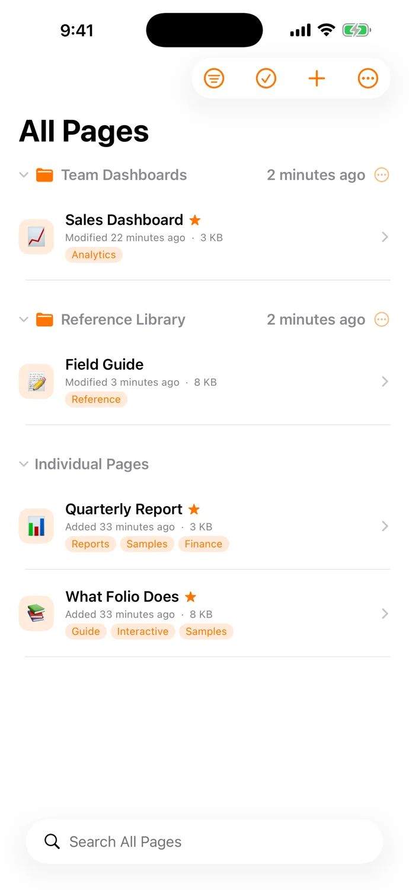
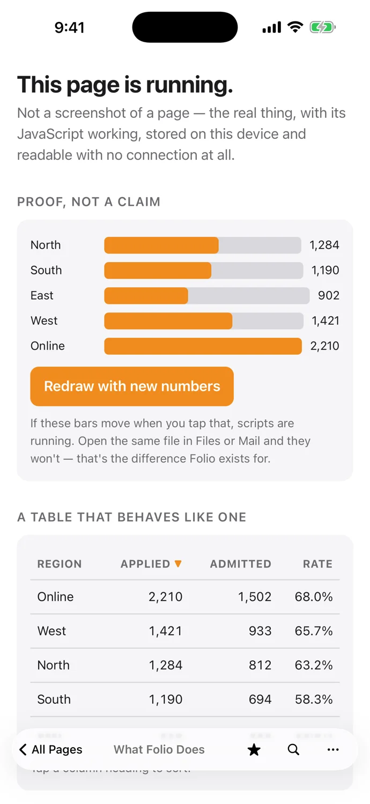
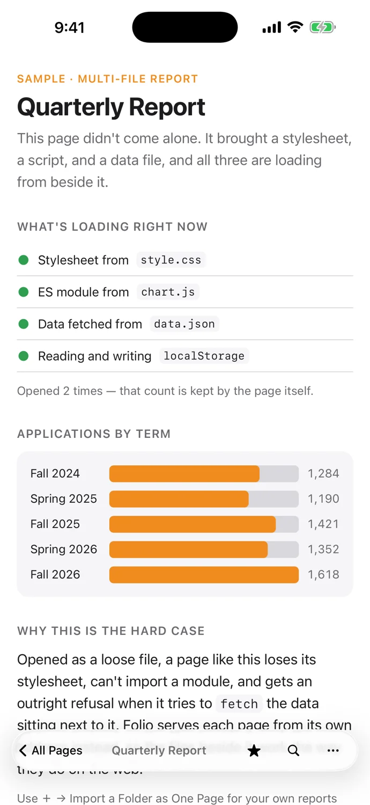

A library for your web files.
Import a single HTML file or a complete page with its images, styles, scripts, and data.
For iPhone and iPad
Keep reports, interactive pages, and the web files that matter in a library made for iPhone and iPad.
No account. No ads. Your space.

Import a single HTML file or a complete page with its images, styles, scripts, and data.
Use interactive reports and tools as they were made. Pages stay offline unless you enable network access.
Keep supporting files together. Organize with tags and favorites, or connect iCloud and Google Drive when you choose.


Made with care
Your files stay yours. Read about optional connections and how Folio protects your library.
Read the privacy policy →